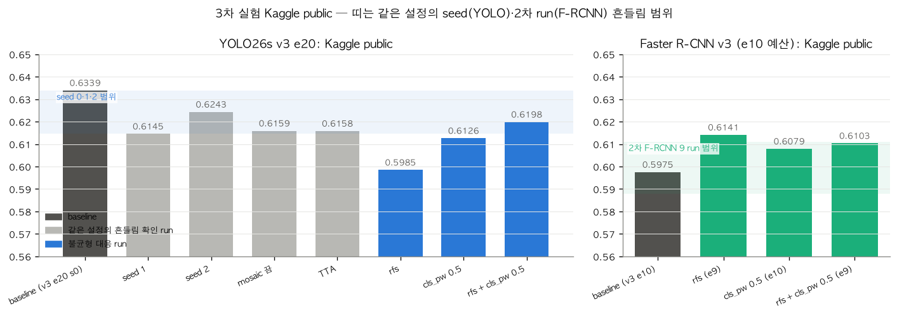

1 / 0
3차 실험
불균형 대응으로 점수가 확실히 오른 조건은 없었습니다.
같은 설정도 seed만 바꾸면 0.6145~0.6339 (편차 0.020)입니다. baseline seed 0이 유독 높았던 것이고, 판정은 ±0.02로 합니다.

YOLO26s: 효과 없음
rfs 0.5985(−0.035, 범위 밖 하락), cls_pw 0.6126(−0.021, 경계), 둘 다 0.6198(−0.014)
Faster R-CNN: 판정 보류
+0.010~+0.017 올랐지만 GPU·torch 버전이 baseline과 다르고, 2차 run 범위 안입니다.
RT-DETR-l: 실행하지 못함
샘플링만 가능했고(손실 가중치 미지원) 시간이 부족했습니다.
← →/Space 이동 · N 노트 · Esc 목차